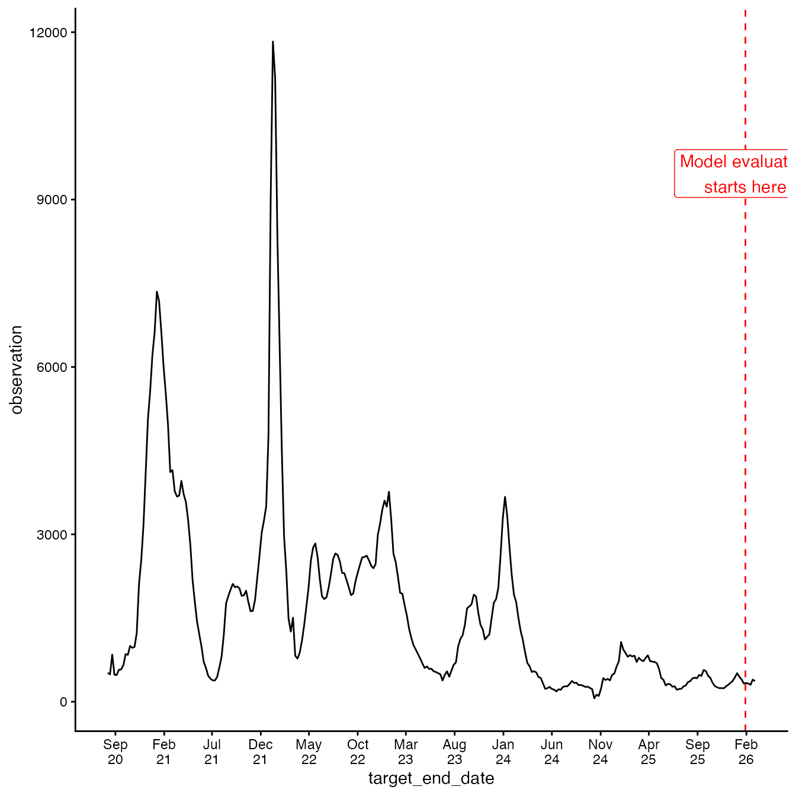
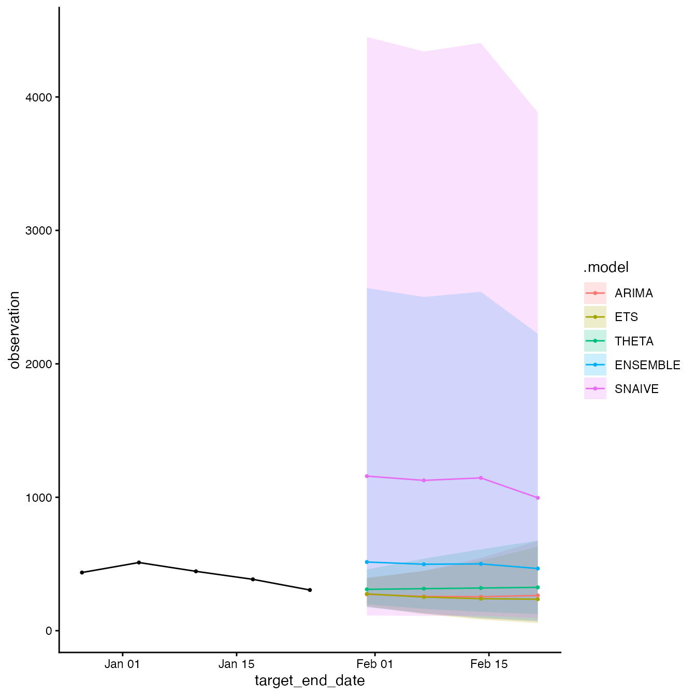

Introduction
The acciddasuite package provides tools for building
infectious disease forecasts…? This vignette demonstrates how the
standard frameworks create and evaluate forecasts using R.
We will aim to demonstrate the basic steps in a forecasting task, as defined by Hyndman & Athanasopoulos (2021).
Statistical Modelling
get_data
Ideally, you would load your own data here.
For demonstration purposes, we will load data from the CDC National Health Safety Network. The data dictionary is available here.
library(dplyr)
library(ggplot2)
library(pipetime)
library(fabletools)
library(acciddasuite)
df <- get_data(pathogen = "covid", geo_values = "ny")
summary(df)
#> as_of location target
#> Min. :2026-01-11 Length:284 Length:284
#> 1st Qu.:2026-01-11 Class :character Class :character
#> Median :2026-01-11 Mode :character Mode :character
#> Mean :2026-01-11
#> 3rd Qu.:2026-01-11
#> Max. :2026-01-11
#> target_end_date observation
#> Min. :2020-08-08 Min. : 60.0
#> 1st Qu.:2021-12-16 1st Qu.: 463.5
#> Median :2023-04-25 Median : 1005.5
#> Mean :2023-04-25 Mean : 1653.0
#> 3rd Qu.:2024-09-01 3rd Qu.: 2254.2
#> Max. :2026-01-10 Max. :11833.0Time Series Cross-Validation
To evaluate predictive performance, we employ time series
cross-validation. We fit models using the data available up to a
specific cutoff point (eval_start_date), then forecast
h weeks ahead with expanding windows. You do not want to
eval_start_date to be too far back in time as it can be
computationally expensive.
We visualise the data and decide on the
eval_start_date.
# We ony evaluate on the last 30 days of data for demonstration purposes
eval_start_date <- max(df$target_end_date) - 30
df |>
ggplot(aes(x = target_end_date, y = observation)) +
geom_line() +
geom_vline(
xintercept = eval_start_date,
linetype = "dashed",
color = "red"
) +
annotate(
"label",
x = eval_start_date,
y = max(df$observation) * 0.8,
label = "Model evaluation\nstarts here",
color = "red"
) +
scale_x_date(date_labels = "%b\n%y", breaks = "5 months") +
theme_classic()
Default models are: Naïve (Random Walk RW): A
baseline model carrying forward the last observation.
ETS: Exponential Smoothing state space model
(automatically selected). ARIMA: Auto-Regressive
Integrated Moving Average model (automatically selected).
fcast = get_fcast(
df,
eval_start_date = eval_start_date,
top_n = 4, # Select top 4 models
h = 4 # forecast 4 weeks ahead
) |>
time_pipe("forecasting")
#> Time Series Cross Validation...
#> Generating final forecasts...
fcast
#> <accida_cast>
#>
#> Models evaluated:
#> # A tibble: 5 × 2
#> .model CRPS
#> <chr> <dbl>
#> 1 ETS 44.6
#> 2 ARIMA 46.1
#> 3 ENSEMBLE 58.4
#> 4 THETA 65.9
#> 5 SNAIVE 248.
#>
#> Forecast horizon:
#> From: 2026-01-17
#> To: 2026-02-07
#>
#> Contents:
#> $forecast fable forecast object
#> $score model ranking table
#> $plot ggplot2 object
fcast$plot
Adding extra_models
Example using EspiEstim with
projections.
extra <- list(
CUSTOM_ARIMA = ARIMA(observation ~ pdq(1,1,0)),
PROPHET = fable.prophet::prophet(observation ~ season("yearly"))
#EPIESTIM = ...
)
fcast = get_fcast(
df,
eval_start_date = eval_start_date,
top_n = 4, # Select top 4 models
h = 4, # forecast 4 weeks ahead,
extra_models = extra
) |>
time_pipe("forecasting")